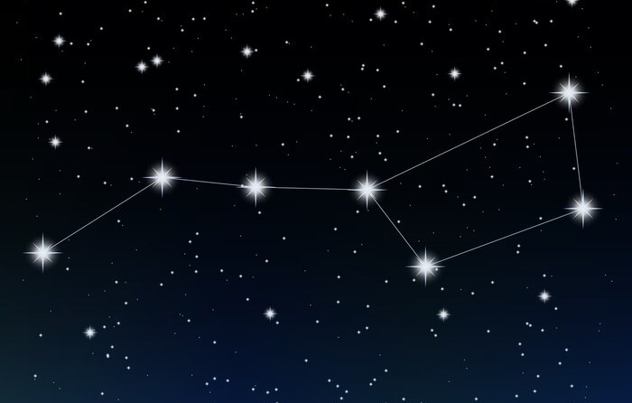
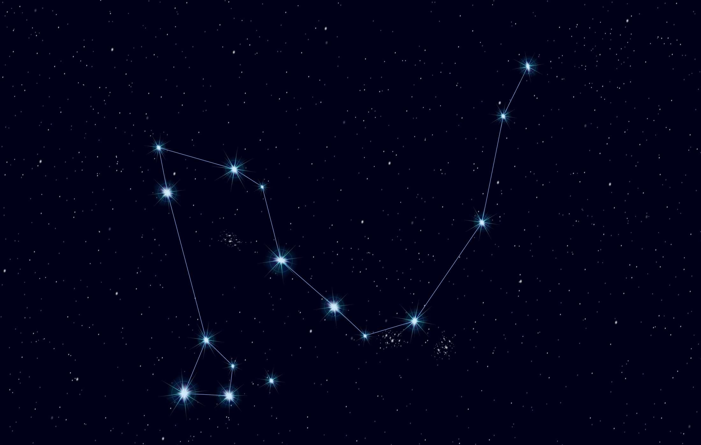

Shooting star
Can be seen with the bare eye and embows good luck to the spotter! Scroll left or rigth for more astronomical disoveries.

The Big Dipper
A common asterism able to be seen with the bare eye. Belongs to the constellation of Ursa Major.

Draco
A constellation resembling a dragon. Commonly seen in the northern sky.